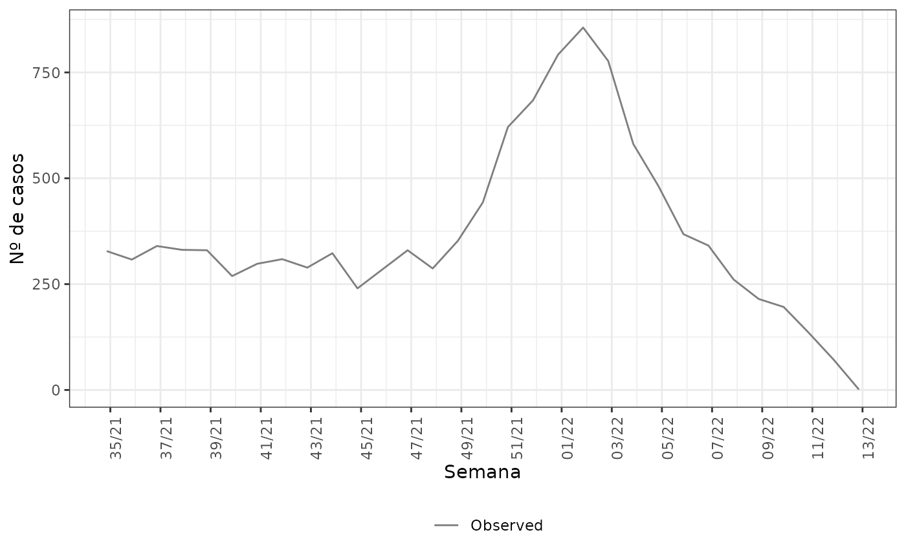
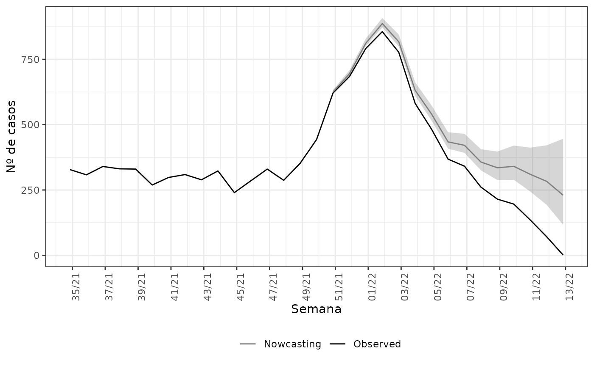
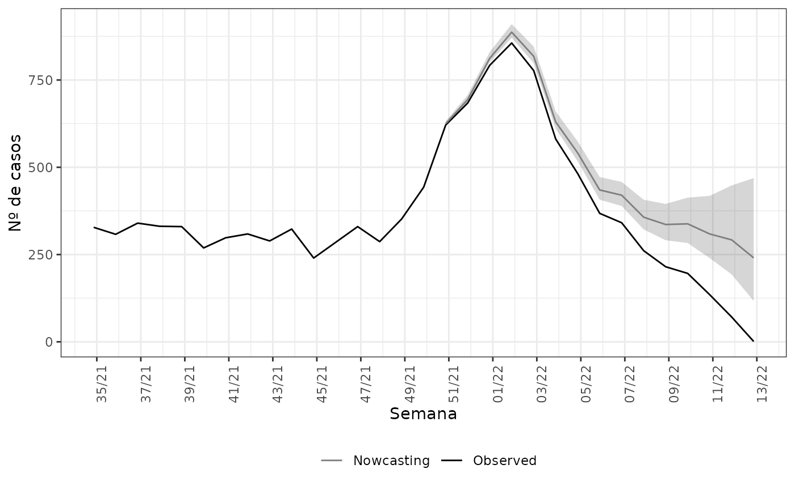

Primeiro exemplo
Ao ser carregado, o pacote disponibiliza um conjunto de dados
(lazy data), sragBH, com registros anonimizados de
Síndrome Respiratória Aguda Grave (SRAG) notificados no município de
Belo Horizonte, de março de 2020 a abril de 2022. Para carregá-lo, basta
escrever:
E damos uma olhada nos dados:
head(sragBH)#> DT_SIN_PRI DT_DIGITA CLASSI_FIN EVOLUCAO CO_MUN_RES Idade fx_etaria
#> 1 2020-02-11 2020-03-05 4 1 310620 59 50 - 59
#> 2 2020-01-21 2020-02-06 4 1 310620 79 70 - 79
#> 3 2020-03-30 2020-04-17 4 1 310620 72 70 - 79
#> 4 2020-03-26 2020-04-02 4 1 310620 82 80 +
#> 5 2020-03-20 2020-04-13 4 1 310620 50 50 - 59
#> 6 2020-04-07 2020-04-22 5 1 310620 74 70 - 79É um data.frame com 7 variáveis e 65.404 observações. Usaremos apenas as duas primeiras colunas, “DT_SIN_PRI” (data de início dos sintomas) e “DT_DIGITA” (data de digitação), além da coluna “Idade” (idade em anos) para o nowcasting estruturado por idade.
A chamada da função é direta: ela precisa apenas de um conjunto de
dados como entrada, aqui o LazyData carregado no
namespace do pacote. A função tem 3 parâmetros obrigatórios:
dataset, o conjunto de dados a ser corrigido,
date_onset, o nome da coluna com a data de início dos
sintomas, e date_report, o nome da coluna com a data de
notificação dos casos. Aqui essas colunas são “DT_SIN_PRI” e
“DT_DIGITA”, respectivamente.
Estimativa do nowcasting
Use as abas para ver a mesma análise com a
nowcasting_inla() (INLA) ou com a
nowcasting_mgcv() (mgcv). Escolher uma aba troca todas as
abas da página.
nowcasting_bh_no_age <- nowcasting_inla(dataset = sragBH,
date_onset = "DT_SIN_PRI",
date_report = "DT_DIGITA",
data.by.week = T)
head(nowcasting_bh_no_age$total)#> # A tibble: 6 × 7
#> Time dt_event Median LI LS LIb LSb
#> <int> <date> <dbl> <dbl> <dbl> <dbl> <dbl>
#> 1 17 2021-12-19 625 621 633 623 627
#> 2 18 2021-12-26 695 687 708 692 699
#> 3 19 2022-01-02 812 801. 830 807 817
#> 4 20 2022-01-09 887 872. 908 880 894
#> 5 21 2022-01-16 817 799 845. 810 826
#> 6 22 2022-01-23 631 610 662 622 640
nowcasting_bh_no_age_mgcv <- nowcasting_mgcv(dataset = sragBH,
date_onset = "DT_SIN_PRI",
date_report = "DT_DIGITA",
data.by.week = T)
head(nowcasting_bh_no_age_mgcv$total)#> # A tibble: 6 × 7
#> Time dt_event Median LI LS LIb LSb
#> <int> <date> <dbl> <dbl> <dbl> <dbl> <dbl>
#> 1 17 2021-12-19 625 621 632 623 627
#> 2 18 2021-12-26 694 687 707. 692 698
#> 3 19 2022-01-02 812 801 830 807 817
#> 4 20 2022-01-09 887 871 910 881 894
#> 5 21 2022-01-16 818 798 846 810 826
#> 6 22 2022-01-23 630 610 660 622 640A curva epidêmica observada
Esta chamada retorna, no primeiro elemento, total, a
estimativa do nowcasting (Median) e seus intervalos em dois
níveis: LIb e LSb são os limites inferior e
superior do intervalo de 50%, e LI e LS são os
limites inferior e superior do intervalo de 95%. Na
nowcasting_inla() estes são intervalos de credibilidade a
posteriori.
No segundo elemento, data, retorna os dados que,
agrupados e somados, dão a curva epidêmica. Vamos olhar esse
elemento.
library(ggplot2)
library(dplyr)
dados_by_week <- nowcasting_bh_no_age$data |>
dplyr::group_by(dt_event) |>
dplyr::reframe(
observed = sum(Y, na.rm = T)
) |>
dplyr::filter(dt_event >= max(dt_event)-270)
dados_by_week |>
ggplot()+
geom_line(data = dados_by_week,
aes(dt_event,
y = observed,
col = 'Observed'))+
theme_bw()+
theme(legend.position = "bottom",
axis.text.x = element_text(angle = 90)) +
scale_color_manual(values = c('grey50', 'black'),
name = '')+
scale_x_date(date_breaks = '2 weeks',
date_labels = '%V/%y',
name = 'Semana')+
labs(x = '',
y = 'Nº de casos')
library(ggplot2)
library(dplyr)
dados_by_week_mgcv <- nowcasting_bh_no_age_mgcv$data |>
dplyr::group_by(dt_event) |>
dplyr::reframe(
observed = sum(Y, na.rm = T)
) |>
dplyr::filter(dt_event >= max(dt_event)-270)
dados_by_week_mgcv |>
ggplot()+
geom_line(data = dados_by_week_mgcv,
aes(dt_event,
y = observed,
col = 'Observed'))+
theme_bw()+
theme(legend.position = "bottom",
axis.text.x = element_text(angle = 90)) +
scale_color_manual(values = c('grey50', 'black'),
name = '')+
scale_x_date(date_breaks = '2 weeks',
date_labels = '%V/%y',
name = 'Semana')+
labs(x = '',
y = 'Nº de casos')
Nowcasting e a curva observada
Agrupado e somado pela data de início dos sintomas, aqui
DT_SIN_PRI, este elemento é a curva epidemiológica
observada. Para ver como a estimativa se compara à curva observada,
plotamos as duas juntas.
nowcasting_bh_no_age$total |>
ggplot(aes(x = dt_event, y = Median,
col = 'Nowcasting')) +
geom_line(data = dados_by_week,
aes(y = observed,
col = 'Observed'))+
geom_ribbon(aes(ymin = LI, ymax = LS), colour = NA,
alpha = 0.2,
show.legend = F)+
geom_line()+
theme_bw()+
theme(legend.position = "bottom",
axis.text.x = element_text(angle = 90)) +
scale_color_manual(values = c('grey50', 'black'),
name = '')+
scale_x_date(date_breaks = '2 weeks',
date_labels = '%V/%y',
name = 'Semana')+
labs(x = '',
y = 'Nº de casos')
nowcasting_bh_no_age_mgcv$total |>
ggplot(aes(x = dt_event, y = Median,
col = 'Nowcasting')) +
geom_line(data = dados_by_week_mgcv,
aes(y = observed,
col = 'Observed'))+
geom_ribbon(aes(ymin = LI, ymax = LS), colour = NA,
alpha = 0.2,
show.legend = F)+
geom_line()+
theme_bw()+
theme(legend.position = "bottom",
axis.text.x = element_text(angle = 90)) +
scale_color_manual(values = c('grey50', 'black'),
name = '')+
scale_x_date(date_breaks = '2 weeks',
date_labels = '%V/%y',
name = 'Semana')+
labs(x = '',
y = 'Nº de casos')
Próximos passos
Este é um exemplo em que a estimativa foi feita sem considerar nenhum tipo de estrutura nos dados, o primeiro pressuposto do nowcasting. Para mais detalhes sobre o modelo de nowcasting por trás de cada função, veja os artigos Nowcasting com INLA e Nowcasting com mgcv.